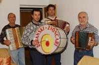

4 D ili Boris, Rado, Igor i Mauro Doričić
 Kad čuju naziv 4D svi Žejanci, ali i oni nastanjeni u nešto široj okolici, odmah znaju o čemu odnosno o kome je riječ. U uhu se pojave takt ili dva, polke i valcera i sjećanje na onaj pusni tanac na kojem se najveselije tancalo, veselilo a i zaljubilo. 4D ili Boris, Rado, Igor i Mauro Doričić dvije su obiteljske generacije "sopaca" koji osim što sviraju sa zvončarima i po pusnim tancima, aktivno rade na promoviranju izvorne žejanske pjesme, takozvanog bugarenja, i izvornih žejanskih instrumenata.
Prije 15 godina osnovali smo bend 4D po kojemu nas većina ljudi i poznaje, Mauro svira bubanj na kojemu je evo vidite i naš amblem, Boris udara u bajs, a Igor i ja zaduženi smo za potporu na harmonici.
Ja osobno od srednje škole sviram sa žejanskim zvončarima i mogu reći da sam sve naučio na sluh – sjeća se svojih sviračkih početaka Rado Doričić koji u bendu uz brata Borisa čini seniorski dio "ekipe".
Boris: Ja sam počeo svirati s 8 godina, a kasnije kad sam bio malo veći, ali ne puno, počeo sam svirati sa zvončarima po selu. Inače sam onda još svirao harmoniku i sjećam se da su me jednom prilikom vozili u karioli jer je ta harmonika bila praktički veća od mene (smijeh).
Rado: Sad smo kao pusna grupa puno kvalitetniji, zvončare prate i članovi folklorne skupine, plesačice i plesači odjeveni u izvorne narodne nošnje koji uz pratnju štajerke i bajsa ili cindre između ostalih plesova plešu mazolin i čotiš...to su naši izvorni plesovi, a Igor vodi pjevačku skupinu "Žejanske Kntadure". Oni su prije nekog vremena snimili i dva albuma, ali o tome više može reći on sam.
Igor: Prvi album "Žejanski zvončari" snimili smo 97. godine. Na albumu se nalazi nekoliko pjesama na žejankom govoru, jedna autorska himna i ostalo su popularne pusne pjesme prepjevane na žejanski. Za prepjeve je bio zadužen Boris... Možemo se pohvaliti da smo prošle godine imali promociju drugog i to dvostrukog albuma.
Osim što svirate "o pustu" i na pučkim zabavama, manje je poznato da ste restaurirali neke od vaših harmonika?
Rado: U kući imamo čak 8 harmonika, tu su štajerka, triještinka... a ova koju vidite, Borsinijeva od 120 bajsi, četveroglasna je najstarija. Ima oko 70-ak godina, a možda i više, ni ne znamo točno. Naime kad su je naši roditelji kupili ratne 1941. negdje u Rukavcu, bila je polovna, znači da je već tada imala nekih desetak godina. Treba znati da si je u to vrijeme malo tko mogao priuštiti harmoniku koje su tada još sve rađene ručno i dolazile su uglavnom iz Italije i Austrije. Kako bi namaknuli novac za kupnju jedne harmonike naši roditelji prodali su kravu. Nakon tolikih godina koje je preživjela trebala joj je restauracija tako da sam prije nekoliko godina prionuo na posao te sam sam izradio i promijenio većinu djelova, počevši od samih tipaka i ukrasa pa do cijele unutrašnjosti... jedino je ukrasni pokrov naručen iz Italije.
Među silnim harmonikama vidjeli smo i nekakvu tamburicu...?!
Igor: Sliči tamburici, ali dosta razlikuje od nje. To je takozvana cindra, izvorni žejanski glazbeni instrument. Pretpstavlja se da je pred nekih sto i više godina neki Žejanac vjerojatno negdje vidio tamburicu, nakon čega je došao u selo i htio se napraviti "faca" pa je po uzoru na tamburicu napravio cindru, ali nije išao za tim da su pragovi na vratu tamburice sve kraći i kraći već ih je zakucao na 3,50 cm dodao dvije žice iste debljine, jednako "naštelane" i to je zvučalo ok...
Rado: U selu je postojala jedna cindra, ali je negdje 60-ih godina prodana i izgubio joj se nažalost trag. Prije nekih desetak godina dobio sam želju da nekako nađem tu cindru, da je makar slikam, izmjerim, ako je ne bi bilo moguće ponovo kupiti... I daj, daj, uz pomoć pokojnog profesora Renata Pernića kojeg sam upoznao preko folklornih grupa uspio sam doći do nje i napravio po njoj novu. Radio sam sve ručno iz jednog komada javora, a manji dio izrađen je od drva šljive. Inače sam po struci stolar tako da sam je pokušao napraviti što je moguće preciznije.
Igor: Uz cindru se, kako naši stari, oduvijek bugarilo. Bugarenje je starinski kanat karakterističan samo za Žejane. I danas stariji ljudi dobro bugare, ali ne znamo kako se to radilo uz pratnju cindre, s obzirom da je u selu nije bilo od šezdesetih godina prošlog stoljeća. No kako je postojala volja tako sam uspio shvatiti neke zakonitosti i sa zborom koji djeluje u okviru našeg folklornog društva smo to uspjeli otprilike i otpjevati.
Alenka Juričić
March 16, 2003
© 2003 Novi List